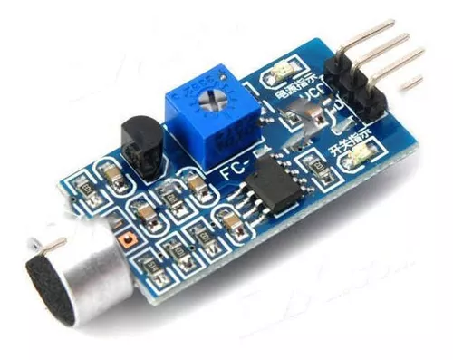

<body>
    <!DOCTYPE html>
    <html lang="pt-BR">
    <head>
        <meta charset="UTF-8">
        <meta name="viewport" content="width=device-width, initial-scale=1.0">
        <link rel="stylesheet" href="style.css">
        <title>Sensor</title>
    </head>
    </body>
    </html>
</body>
        <header>
            <nav>
            <a href="index.html">sobre o arduino</a>
            <a href="dados.html">dados da placa e sistema</a>
            <a href="aplicacoes.html">aplicações do arduino</a>
            <a href="sensor.html">sobre o sensor</a>
            </nav>
            <main>
                <h1>Sensor analógico</h1>
                <article>
                    <h2>O sensor analógico é um componente onde pode se medir o valor de varios estados fisicos.</h2>
                </article>
                
                <p> foto retirada de https://www.mundoeletronica.com.br/produtos/modulo-detector-sensor-de-som-palmas-arduino-pic/</p>
                <article>
                    <p>O sensor analógico do Arduino é um componente fundamental que permite medir valores variáveis de forma contínua, como temperatura, luminosidade, umidade, entre outros. Ele funciona convertendo uma grandeza física em um sinal elétrico proporcional, que pode ser lido pelo microcontrolador do Arduino. Geralmente, os sensores analógicos são conectados aos pinos de entrada analógica do Arduino, permitindo que o microcontrolador leia valores em uma escala de 0 a 1023, correspondendo a uma faixa de 0 a 5 volts.

                        Existem diversos tipos de sensores analógicos disponíveis para o Arduino, cada um com sua aplicação específica. Por exemplo, o sensor de temperatura LM35 pode ser utilizado para medir a temperatura ambiente, enquanto o sensor de luminosidade LDR (Resistor Dependente de Luz) é ideal para detectar variações na intensidade luminosa. Com esses sensores e um pouco de programação, é possível criar uma ampla gama de projetos interativos e dispositivos inteligentes.</p>
                </article>
                <footer>
                    <small>Direitos reservados de Augusto &reg;&trade;</small>
                </footer>
            </main>
        </header>
    </body>
    </html>
</body>